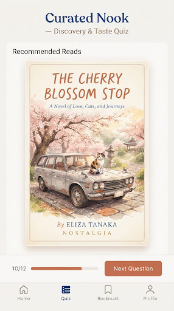
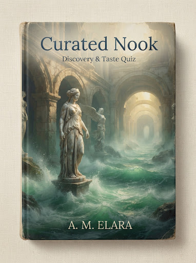
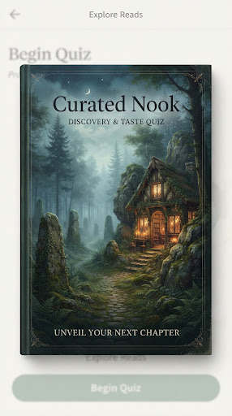
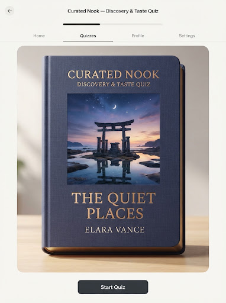
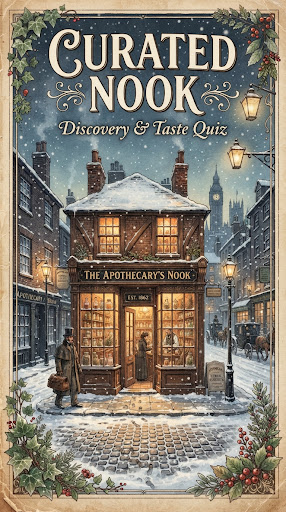
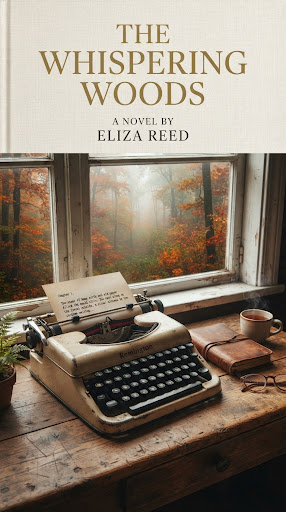
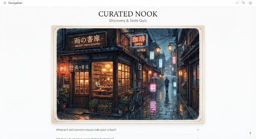

The Curated Nook — Discover Your Next Companion
An unhurried haven crafted for discerning readers. Step away from algorithmic noise into bespoke literary resonances, quiet recommendations, and unexpected kinships waiting between parchment covers.
The Book Lover's Taste Quiz
Tune your internal compass. Allow current season, twilight lighting, and interior tempo to sculpt tonight's story match.
“Small Things Like These” or “Convenience Store Woman”
Luminous, distilled prose with intense reverence for sensory micro-moments. Ideal for a slow evening steeped with chamomile.
Whimsical Wanderer
Release choice paralysis to fate. Spin the cedar turnstile to receive a handpicked gem outside your usual algorithmic radius.

The Travelling Cat Chronicles
Hiro Arikawa • 288 pages
Bittersweet, profoundly warm road trip across coastal Japan narrated through feline pragmatism and unconditional companionship.
Refine Your Reading Sanctuary
Distill our slow archive by aesthetic resonance and physical book volume.
Because You Loved “Piranesi”
Labyrinthine wonder, gentle solitary narrators, and atmospheric majesty that defies mundane reality.

The Starless Sea
Erin Morgenstern
Subterranean sanctuaries guarded by acolytes, doorways cut into timeless ballrooms, and ancient stories braided together with honey and keyholes.

The Memory Police
Yoko Ogawa
On an unnamed island, objects vanish from reality: birds, ribbons, roses. A quiet, poetic meditation on preservation, grief, and quiet defiance.

The House in the Cerulean Sea
TJ Klune
A heartwarming sanctuary on an isolated island where eccentric magical youths learn companionship alongside a fastidious bureaucrat finding home.
Unputdownable This Month

The Lost Apothecary
Top DiscussedSarah Penner • Historical Mystery
“Discussed across 83 tea tables this week alone. Secrets hidden in medicinal vials.”

Foster
Short ReadClaire Keegan • 88 pages • Irish Fiction
“An ache of affection so subtle you barely notice your breath catching.”

Before the Coffee Gets Cold
BelovedToshikazu Kawaguchi • Magic Realism
“A cafe in Tokyo that allows time-travel, under one strict condition: return before coffee cools.”
Secret Gems (<1k Ratings)
Exquisite discoveries protected from virality. Small batch press prints, forgotten translations, and gentle memoirs.
The Blue Book of Nebo
Manon Steffan Ros • 150 pages
Tender post-apocalyptic Welsh novella exploring mother and son documenting their quiet mountain survival into a found notebook.
Cold Enough for Snow
Jessica Au • 104 pages
Quiet strolls through Tokyo galleries, train rides, and meals. A mother-daughter dynamic articulated through delicate silence.
Our Promise of Unhurried Reading
Folio & Hearth does not measure books by speeds, streaks, or checklists. Read two pages by the kettle or absorb an entire volume until morning twilight. What matters is the quiet conversation within.